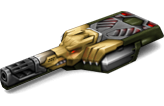

概括
作为轰天炮的近亲，雷暴炮在无限射程的炮弹方面具有类似的功能，但威力会逐渐减弱，
但有一些因素使其能够从其老兄弟中脱颖而出。
雷暴炮的射击速度要慢得多，但它在中等范围内具有令人难以置信的威力，
是上述豌豆射手和激光炮之间的稳固中间地带. 这种武器更显着的特点是炮弹在撞击时会猛烈地破碎，
在目标周围的半径范围内造成相当大的伤害。
这使得雷暴炮在单人夺取控制点时成为一个绝佳的选择，因为它可以将火力集中在点附近，并从远处一次伤害多个坦克。
只需在你的对手之间保持公平的距离，以免你自己的爆炸性飞溅伤到自己。
车库中的描述
中程炮塔。高爆弹丸可以同时击中数辆坦克。
射击的爆炸也会伤害你自己的坦克，要小心，并避免在靠近目标的情况下进行战斗。
这款中程炮塔的设计充分考虑了使用传奇轰天炮的炮塔悠久历史。
激烈、充满活力的战斗爱好者的最佳选择。
它的有效载荷由新一代穿甲弹组成。
这样的子弹可以击中一群敌人，而相对较快的装弹将使您对重型敌方坦克具有优势。
但要小心——在近距离内很容易损坏你自己的坦克。
结合快速的船体，雷霆可以在经验丰富的油轮手中变成致命武器。
没有那么老练的玩家不存在，因为它们往往会很快炸毁自己。
装备改造
防御模块
射击效果

皮肤

雷暴炮标准

雷暴炮 XT
雷暴炮遗产
青春雷暴炮

雷暴炮超高